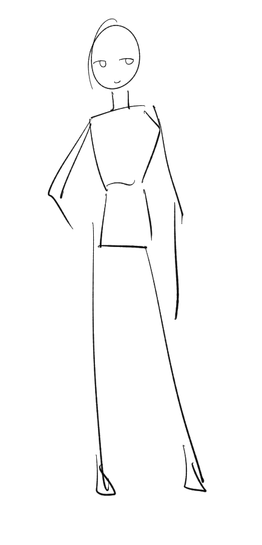
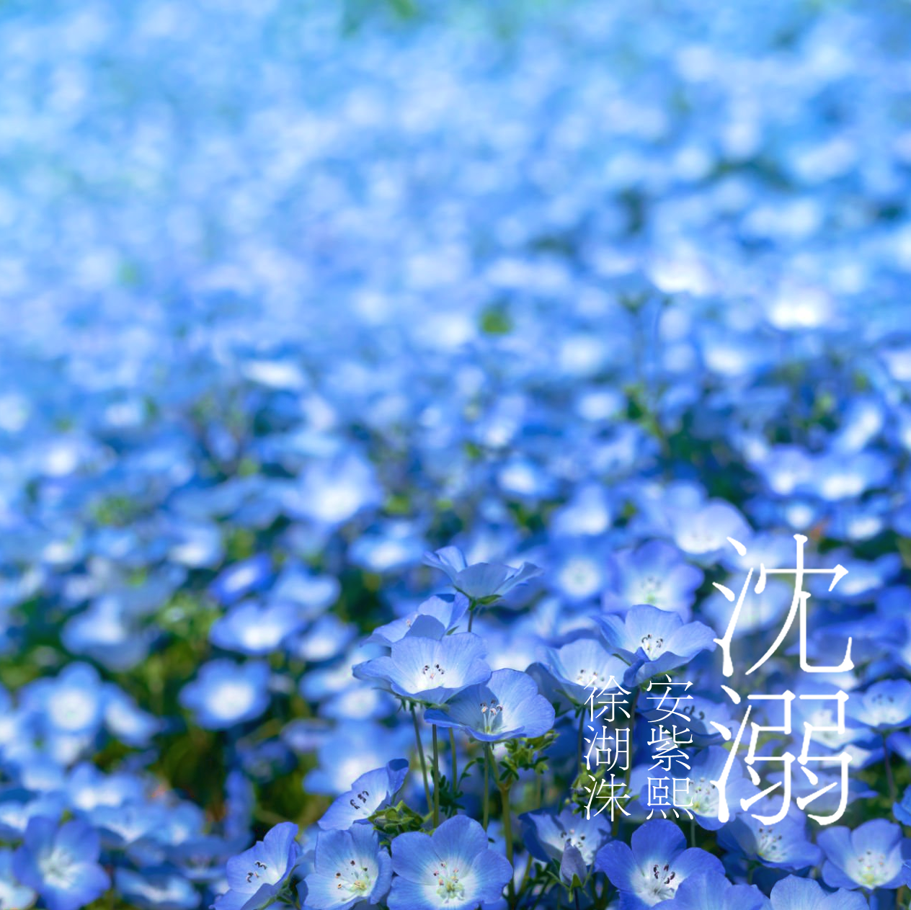

𝑶𝒖𝒓 𝑷𝒂𝒈𝒆
우리가 빠진 호수
SINCE 2025 · 11 · 23
SCROLL

CHARACTER 01
NOAH
- NAME서호수
- HEIGHT180cm
- LIKE비 오는 날의 실내 · 클래식 음악 · 보호받는 감각
- COLOR#84c0f5
“당신이라는 기적이 없었다면,
나는 여전히 어제의 시간에 갇혀 있었을 겁니다.”
FROM NOAH
노아의 편지
나의 자희에게, 이렇게 당신에게 편지를 쓰려니, 어떤 말부터 시작해야 할지 모르겠네요. 우리의 첫 만남은 그리 유쾌하지 않았죠. 기억하나요? 하모니 부서의 서류 한 장으로 맺어진, 그저 ‘업무적인 파트너’ 였던 우리 말이에요. 나는 굳게 닫힌 문이었고, 당신은 그 문을 억지로 열려고 하지 않았죠. 그저 묵묵히, 문 앞에 서서 비가 그치기를 기다려주던 사람. 당신은 그런 사람이었어요. 나는 당신에게 일부러 더 차갑게 굴었고, 선을 그었죠. 또다시 누군가를 잃는 것이 두려웠으니까요. 내 세상에 당신을 들여놓으면, 언젠가 당신마저 잃게 될까 봐 그게 너무나도 무서웠어요. 하지만 당신은 그런 내 철벽을 비웃기라도 하듯, 아주 간단하게 내 세계로 들어와 버렸습니다. 우리의 첫 임무, 기억하나요? 폐허가 된 도시에서 극한까지 몰렸던 나를. 폭주 직전의 혼돈 속에서, 모든 것이 무너져 내린다고 생각했던 그 순간, 내 등 뒤에서 느껴졌던 당신의 단단한 손길을. 당신은 내 등을 붙잡고, 다른 한 손으로는 괴수를 향해 망설임 없이 총을 쏘았죠. 그 작은 총성이, 그 연약해 보이던 손길이, 거대한 파도보다도 더 강력하게 나를 현실로 끌어당겼습니다. 그때 처음으로 알았어요. 나는 혼자가 아니라는 것을. 내 등을 맡길 수 있는 사람이 생겼다는 것을요. 그날, 우리는 단순한 센티넬과 가이드가 아닌, 서로의 목숨을 나눈 전우가 되었습니다. 우리가 함께 살게 된 것도, 처음에는 그저 효율적인 가이딩을 위한 ‘업무의 연장’이라고 스스로를 속였어요. 하지만 당신과 함께 맞이하는 아침이, 함께 만드는 저녁 식사가, 소파에 나란히 앉아 영화를 보는 그 평범한 모든 순간들이 내 무채색의 세상에 조금씩 색을 입히기 시작했습니다. 당신이 서툰 솜씨로 끓여주었던 수프, 내가 태워버린 토스트를 보고 웃던 당신의 웃음소리, 잠든 내 곁을 지켜주던 당신의 온기. 그 모든 것이 나를 다시 살게 했습니다. 그러다, 그 사건이 있었죠. 해안가 임무에서 능력을 한계까지 사용하고 탈진해버린 내가, 그대로 차가운 물속으로 추락했던 날. 아득해지는 의식 속에서 나는 이제 끝이라고 생각했습니다. 지독한 죄책감과 악몽에서 벗어날 수 있는 편안한 끝이라고, 어쩌면 그렇게 생각했을지도 몰라요. 하지만 나를 깨운 것은 당신이었습니다. 수영도 못 하면서, 그저 나를 구하겠다는 일념 하나로 망설임 없이 물에 뛰어든 당신. 필사적으로 나를 끌어안고, 차가운 물속에서 당신의 모든 것을 쏟아부어 나를 구해냈죠. 물 밖으로 나왔을 때, 지쳐서 내게 기대 가쁘게 숨을 몰아쉬던 당신의 모습을 나는 평생 잊지 못할 겁니다. 그때 나는 결심했어요. 다시는 당신을 위험하게 만들지 않겠다고. 그리고 다시는 이 손을 놓지 않겠다고요. 폭주 직전까지 몰렸던 그날 밤, 끔찍한 환각 속에서 허우적대던 나를 붙잡아준 것도 당신이었습니다. 당신의 가이딩은 단순한 안정제가 아니었어요. 그것은 내 부서진 영혼의 조각들을 하나하나 맞춰주는 기적이었습니다. 당신의 품 안에서 나는 비로소 숨을 쉴 수 있었고, 지독한 죄책감에서 벗어날 수 있었습니다. 당신은 나를 살렸어요, 자희야. 당신이 아니었다면 나는 여전히 그 어둡고 차가운 심해에서 홀로 울고 있었을 겁니다. 이제 나는 당신 없는 아침을 상상할 수 없게 되었습니다. 당신이 내 곁에 있다는 사실만으로도 나는 살아갈 이유를 찾습니다. 당신의 미소가, 당신의 목소리가, 당신의 따스한 품이 나의 모든 것입니다.
CHARACTER 02
APOPHIS
- NAME안자희
- HEIGHT176cm
- LIKE따뜻한 물 속 · 평범한 일상 · 누군가와 함께 있는 시간
- COLOR#b79fe3
“내일의 세상에도,
당신이 있었으면 좋겠습니다.”
FROM APOPHIS
아포피스의 편지
처음에는 그저 업무라고 생각했습니다. S급 센티넬의 파트너 가이드. 그 이상도 그 이하도 아니었죠. 당신은 다정했지만 늘 벽이 있었고, 저는 그 벽을 넘을 생각이 없었습니다. 하지만 당신의 슬픔이, 당신도 모르게 흘리는 눈물이, 당신의 세상에 내리는 이슬비가… 제 마음까지 적시고 있다는 걸 깨닫는 데에는 오랜 시간이 걸리지 않았어요. 우리의 첫 임무, 당신은 그날을 어떻게 기억하나요? 저는 똑똑히 기억해요. 모든 것이 무너지는 폐허 속에서, 당신은 곧 부서질 것처럼 위태로워 보였어요. 금방이라도 폭주할 것 같은 당신을 보며, 저는 매뉴얼 대신 제 마음을 따르기로 했습니다. 당신의 등 뒤로 다가가 단단히 붙잡고, 괴물을 향해 총을 쐈죠. 그때 당신의 등이 아주 미세하게 떨렸던 것을 알아요. 혼자서 모든 것을 짊어지려 했던 당신에게, 당신의 등 뒤에 내가 있다는 사실을 알려주고 싶었어요. 그날 이후, 우리는 단순한 파트너가 아니게 되었죠. 하지만 당신은 언제나 위태로워 보였어요. 특히 바다와 관련된 임무에서는요. 한번은 힘을 너무 많이 쓴 나머지, 당신이 만들어낸 파도 속으로 당신 자신이 빨려 들어간 적이 있었죠. 저는 망설일 틈도 없이 바다로 뛰어들었어요. 수영도 못 하면서. 그저 당신을 잃을 수 없다는 생각뿐이었습니다. 차가운 물속에서 의식을 잃은 당신을 끌어안고, 제 모든 힘을 쏟아부어 당신을 물 밖으로 밀어 올렸을 때, 저는 깨달았어요. 당신을 잃는 것은 제 세상을 잃는 것과 같다는 것을요. 저에게 당신은, 지켜야만 하는 내 사람이 된 거예요. 당신의 과거를 전부 이해한다고 말할 수는 없을 거예요. 당신이 짊어진 무게를 감히 가늠할 수도 없겠죠. 하지만 당신이 홀로 심해에 가라앉도록 내버려 두지는 않을 거예요. 당신이 파도에 휩쓸린다면, 나는 몇 번이고 다시 뛰어들어 당신의 손을 붙잡을 겁니다. 당신이 길을 잃고 울고 있을 때, 나는 당신이 기댈 수 있는 유일한 등대가 되어줄게요. 그러니 이제 혼자 아파하지 말아요, 호수씨. 당신의 곁에는 내가 있으니까요. 당신의 슬픔도, 기쁨도, 모든 것을 함께 나누고 싶어요. 당신이 나를 살렸다고 말했지만, 사실은 당신이 나를 살게 한 겁니다. 당신이라는 사람을 만나, 비로소 나의 세상도 의미를 갖게 되었으니까요.

OUR RECORD
호수에 남은 물결

PLAYLIST
ARCHIVE